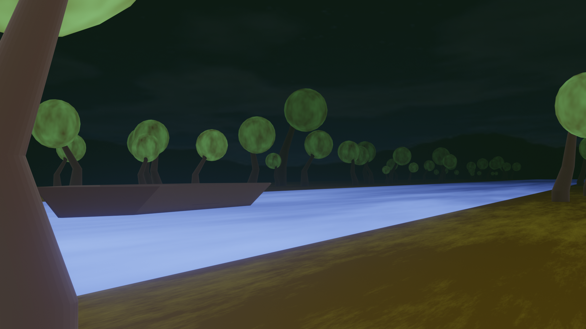
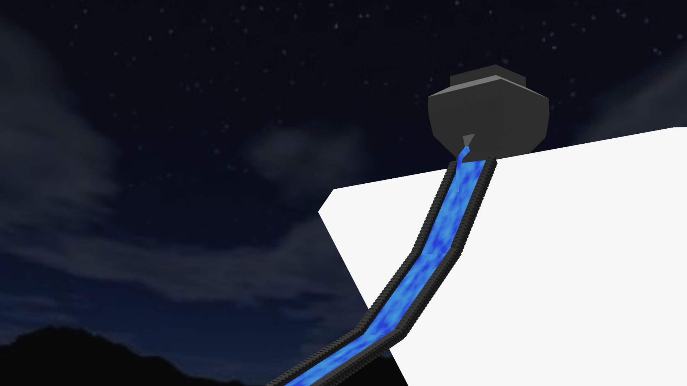

Infernix
VENI ET OBLIVISCERE PECCATA TUA IN INFERNO
Parc aquatique du Styx :
Si vous demandez à Charon d'aller voir Tantale,
il naviguera jusqu’au fleuve du styx la ou se trouve un grand parc aquatique.
Tantalus amnis :

Le but de cette attraction est de ramasser le plus de nectares possible avant que le niveau d'eau baisse...
Vasa Danaidum :

Cette atraction est un grand toboggan alimenté en eau par le vase percé du mythe des Danaïdes.